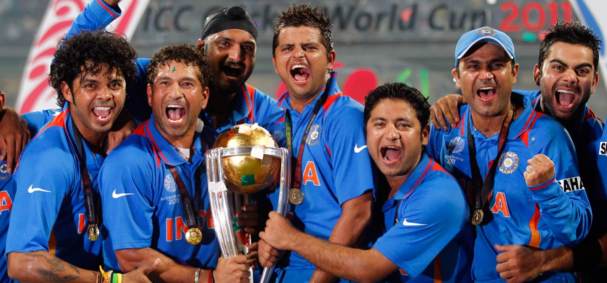

Cricket, a sport steeped in tradition and played with fervor across continents, is a game of strategy, skill, and patience. It originated in England and has since become a beloved pastime for millions. The game involves two teams of eleven players each, competing on a 22-yard pitch. The objective is to score runs while the opposing team tries to dismiss the batsmen.
From the first-ever Cricket World Cup to the nail-biting finishes, cricket has a plethora of unforgettable moments. The game has witnessed legendary performances and historic matches that have etched their names in the annals of cricketing lore.
Cricket has been graced by some of the greatest athletes in sports history. Icons like Sachin Tendulkar, Don Bradman, and Brian Lara have enthralled audiences with their extraordinary skills and sportsmanship.
The ICC Cricket World Cup, T20 World Cup, and The Ashes are among the most prestigious tournaments in cricket. These events attract millions of viewers worldwide and showcase the best talents in the game.
Getting started with cricket is easy. You'll need some basic equipment like a bat, ball, and protective gear. Understanding the basic rules and positions on the field is crucial. Start by playing informal games with friends to get a feel for the sport.